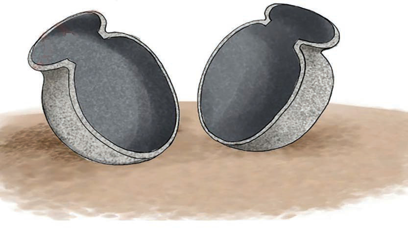

tayari umenakili umbo la ile kalibu. Kwa kutumia kalibu, mfinyanzi hupata faida ya kufinyanga vitu vingi vinavyofanana na vinavyolingana kwa kutumia muda mfupi. Kielelezo namba 1. Kinaonesha mfano wa kalibu kwa ajili ya kufyatulia vyungu.

Vifaa vinavyotumika kutengeneza kalibu
Vifaa vinavyotumika katika ufinyanzi ni pamoja na udongo wa mfinyanzi, maji, saruji, mchanga, chekeche, sampuli ya kalibu, mwiko wa kusawazishia, kamba nene kama dole gumba, chungu cha maua, waya wa wigo wa kuku, mkasi, magazeti na gundi ya maji. Vifaa vingine ni kuni nyembamba, majani makavu, kibiriti, kitambaa cha pamba, brashi ndogo, kisu kidogo, rangi za mafuta, mafuta ya taa, vyombo vya kuwekea rangi, jembe, kimori na ndoo ya plastiki au mifuko minene ya nailoni na nailoni nyepesi.
Hatua za kutengeneza kalibu
Ufinyanzi wa vyungu kwa kutumia njia ya kalibu, huanza kwa kutengeneza nusu mbili za kalibu ambazo zikiunganishwa, hutengeneza chungu kizima chenye umbo unalokusudia. Ili kutengeneza kalibu la chungu fuata hatua zifuatazo: